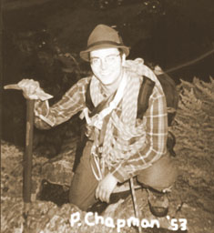
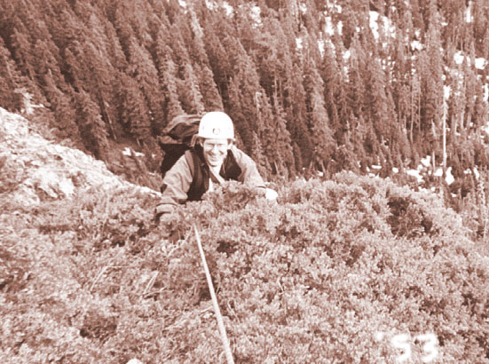

Guye Peak South Rib
“On belay, Peter!”
I was standing in front of a wall of mud, with Peter gingerly crabbing up to a grassy ledge. He had taken to yelling “Clod!” as he tossed bits of mud out of protectable cracks. Three months before, Steve and I had looked at this mud wall, all exposed rock covered in verglas. Prudently, we walked around to the right and climbed a snowy gully. That climb was all fog, snow and ghostly voices. But the highway below had the same steady drone.
The rope hesitated and came down a bit. Peter was trying to move out of a chimney but his foot had slippery purchase on the slime. I waited tensely as he pelted me with mud and slammed a chock into blessed rock. Easier ground and a traverse to a tree. I laughed unexpectedly as he beetled under the silvery branches, breaking one with his pack. “Branch,” and I laughed harder. He brought me up and, as usual, I found the climbing to be harder than it looked from below. Then my lead was just getting interesting when it ended on ledges, and we hiked up to the base of an impressive buttress.


“Most people don’t even…”
“So we didn’t have to do that mud pitch?”
We had taken an afternoon leave from the coalfields, and still begrudged time lost. “Good experience though!” We are alike in our optimism.
I had a choice of lines, all rocky, mid-5th class, with intimidating bulges in the rock. I didn’t expect to find much protection, and chose the easiest way - a shallow cleft broken by ledges. I was excited; beginning to concentrate and move clumsy limbs in harmony. Careful steps around and up. The rock was solid, and covered in edges that worked as long as you were perpendicular to them. Protecting myself was difficult, as the only cracks seemed to be the separation between the wall and dubious looking blocks. But with thought, the climbing was easy for a while. Finally I reached the obvious crux, led to it by a narrowing field of possibilities. A vertical slot, unattainable. But climbing partway would allow leftward movement to blocky, friendly terrain. I fiddled with Peter’s unfamiliar rack. He delighted in “hexes,” oblong metal polygons which are slotted into crevices to hold the rope. I cast a few spells, and slotted one good for a downward pull. Careful not to lift it with the rope, I bent out and found an edge for fingers. The rock beetled over me, and the pack felt heavy as I leaned back. I had planned the sequence.
Hang on the arm, left foot steps high. Right foot behind me, pushes. Left hand reaches, rustles like a mouse, finds an edge with the angle it needs. Push off, right foot dangling, satisfaction fills the brain. I am home. “Nice move!” The crowd of voices in me is silent. I reach the wide ledge, tie onto a rock and try to imagine what Peter is doing. When the rope stops, he is cleaning hexes. I can hear a little jangle of metal at these times. Above the trees, we see the ski slopes, and the clouds are dissipating.
Peter bought a camera, and we take some pictures. Now he is climbing on fun, low-angled rock. “I’ve briefly gained the ridge crest.”
“Right on!”
He totters for effect, then scrabbles out of sight. He goes the full 200 feet, and it is a long while before I see him. When I do, he is apologizing about the spruce patch I’m to climb through. I like the spruce patch. A carpet of slippery branches for variety. For my turn I sadly turn away from interesting rock on the right for an easier way to the left, via root and boulder. The time is running like water, carelessly wasted. Kris expects me at 8, but it’s already 7:30. We talk to voice mailboxes, apologetic and serious. After some loose rock, I come to a great cleft. Peter comes up and together we scramble to a wooded saddle at the top. We gain the right side with a short pitch, then Peter leads us on a long simulclimb of 400 feet. We are finding slings along the way and Peter attaches the rope to them. But the terrain is easy, fun and most importantly fast. Finally, it is my turn and we repeat the exercise. I get on difficult terrain, but by flipping the rope over a buttress, Peter can avoid it. Scrambling up blocks and through the occasional bush, I reach snowy ledges that glow pink in the evening light.
Peter arrives, covered in coiled rope. We put on our boots and hike to the summit. The light is a beautiful blue and pink. The surrounding mountains are out for an evening walk. Peter leads us to the middle summit for pictures, then he lowers me to the notch below the North summit. I get my headlamp, and carefully traverse into the notch while Peter rappels. He does the same and we scramble up to a comfortable saddle. It is 10 o’clock, and again we talk to voice mailboxes which our wives will check. Long strides in the snow take us to Cave Ridge, and we traverse north looking for tracks to follow down to Alpental. We find some, and plod down to trail and boulders with the half moon lighting the valley. We finally lose the trail and Peter splashes across a creek and into someones back porch an hour later. As we creep out of their yard, a little girl comes out and looks at us. We have harnesses, helmets, headlamps and axes, and loom in the shadows off the porch. I’m already tip-toeing away and hear Peter tell her we are coming down from the mountain, and that she should go back inside.
Later, as we walk the road with a spring in our step, we look up at the West Face of the mountain, bathed in moonlight. We didn’t even need to discuss it.